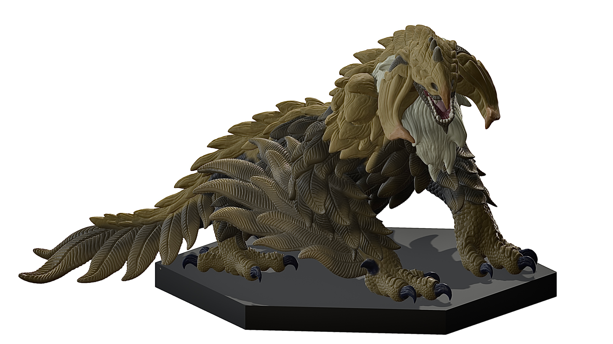

ー STANDARD MODELとは ー
手軽なサイズ感を担保し、ハイクオリティな造形表現を目指したフィギュアモデルです。
比較的コレクションもしやすく、全て全身造形されたもので構成されています。
比較的手に取るのにおすすめのフィギュアシリーズです。
ー Vol.04 無題 ー

近日更新予定です。続報をお待ちください。
・製作年月：２０２６.XX
・販売予定価格：未定
※今後、公開・販売を予定。
製作中
ー Vol.03 大空架ける噴射竜 ー
近日更新予定です。続報をお待ちください。
・製作年月：２０２６.１０
・販売予定価格：２０００円
※今後、公開・販売を予定。
来月解禁
ー Vol.02 地上に生きた蛸 ー

本来、”水生生物として生きる彼らがもし陸上での活動に適応したらどうなるのか”をコンセプトに製作しました。
蛸（頭足類）特有の触腕の表現には、特に力を入れました。
また、外見は蛸の知能の高さや生物としての未知性を感じられるようなものに仕上げています。
・製作年月：２０２６.０７
・販売価格：１５００円
作品詳細へ
ー Vol.01 出立つ猛禽竜 ー

猛禽類を爬虫類とのハイブリッド生物として新たにデザインしました。
竜という架空性がありながらも、外見や体色を含め、既存の鷲やトカゲを思わせるものとなっています。
視力が完全に退化しつつも、その土地に根付く強靭な生物として猛禽竜を新たな生物として描いています。
・製作年月：２０２６.０３
・販売価格：１５００円
作品詳細へ
Topへ